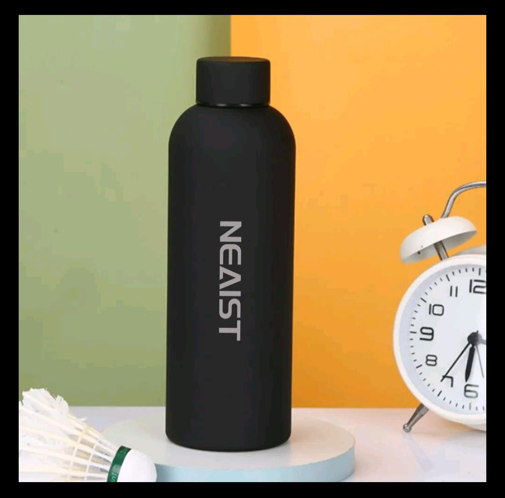
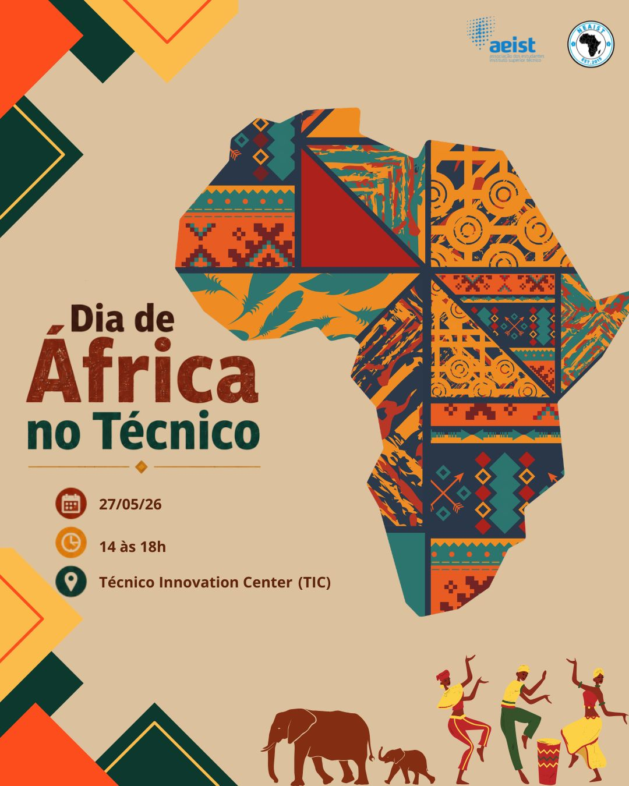
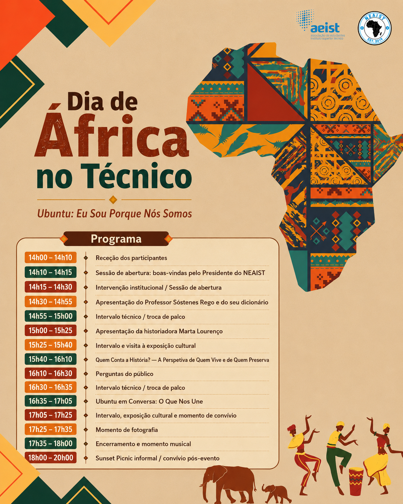
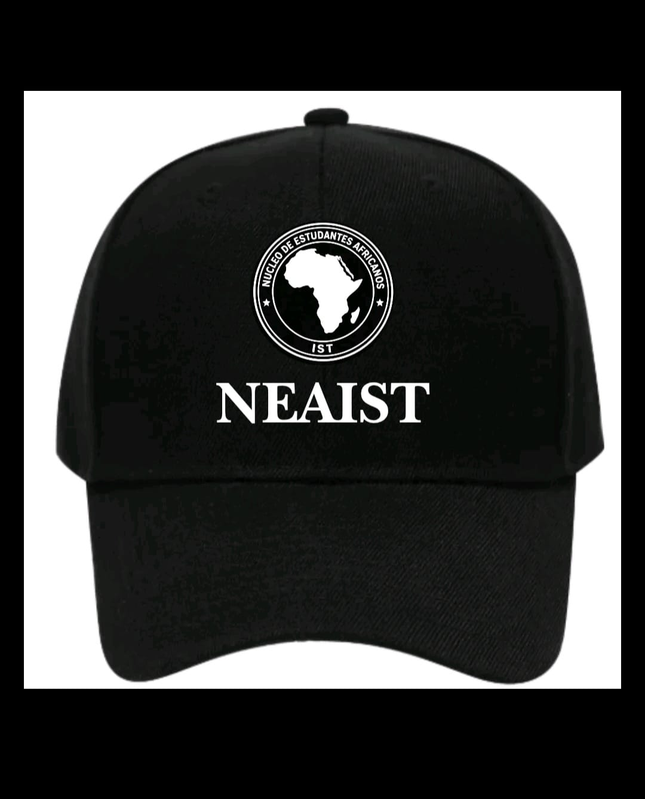
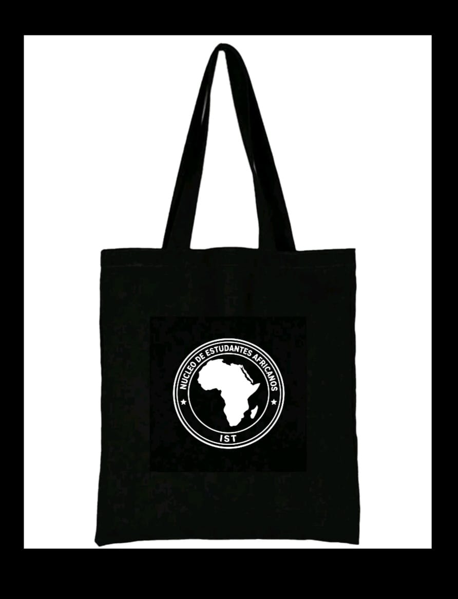

Garrafa NEAIST
Preview do design da garrafa para a colecao do evento e futuras vendas online.
Celebracao cultural organizada pelo NEAIST no Tecnico Innovation Center.
O NEAIST convida-te para uma celebracao inesquecivel do Dia de Africa no Tecnico.
Prepara-te para uma tarde cheia de boa musica, cultura, diversao, energia positiva, convivio e muito orgulho africano! 🪘🎶
Vai ser o momento perfeito para conhecer pessoas, celebrar a diversidade e viver o verdadeiro espirito africano. 🌍
Marca na agenda, chama os teus amigos e vem fazer parte desta festa incrivel! 🎉🔥 Todos estao convidados! 🙌🏾✨

Agenda completa do Dia de Africa no Tecnico, com o cartaz de programa e o alinhamento horario do evento.

| Hora | Atividade |
|---|---|
| 14h00 - 14h10 | Rececao dos participantes |
| 14h10 - 14h15 | Sessao de abertura: boas-vindas pelo Presidente do NEAIST |
| 14h15 - 14h30 | Intervencao institucional - Prof. Rogerio Colaco / Prof. Luis Castro |
| 14h30 - 14h55 | Apresentacao do Professor Sostenes Rego e do seu dicionario |
| 14h55 - 15h00 | Intervalo tecnico / troca de palco |
| 15h00 - 15h25 | Apresentacao da historiadora Marta Lourenco |
| 15h25 - 15h40 | Intervalo e visita a exposicao cultural |
| 15h40 - 16h10 | Quem Conta a Historia? - A Perspetiva de Quem Vive e de Quem Preserva |
| 16h10 - 16h30 | Perguntas do publico |
| 16h30 - 16h35 | Intervalo tecnico / troca de palco |
| 16h35 - 17h05 | Ubuntu em Conversa: O Que Nos Une |
| 17h05 - 17h25 | Intervalo, exposicao cultural e momento de convivio |
| 17h25 - 17h35 | Momento de fotografia |
| 17h35 - 18h00 | Encerramento e momento musical |
| 18h00 - 20h00 | Sunset Picnic informal / convivio pos-evento |
Esta pagina vai receber os produtos oficiais do evento. Deixei a estrutura pronta para colocares a loja quando quiseres.

Preview do design da garrafa para a colecao do evento e futuras vendas online.

Modelo de bone para o merchandising do Dia de Africa e para a loja do nucleo.

Tote bag pronta para integrar a loja com outros produtos e edicoes especiais.
Quando quiseres avancar para a loja, esta secao pode ser ligada a produtos reais ou a um formulario de encomenda.